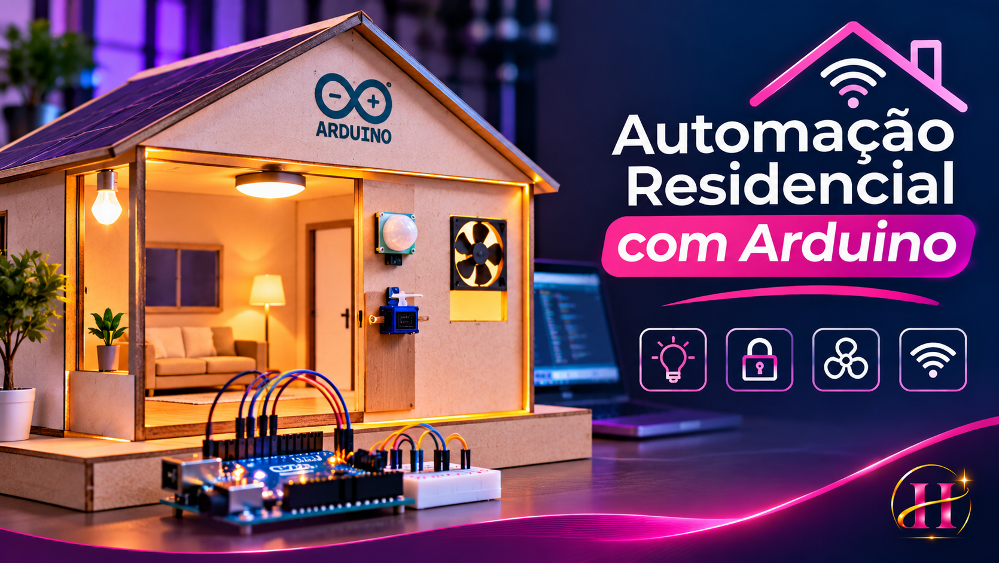

Sensores
Sensores de luminosidade, presença, distância, temperatura, umidade e gás representam as condições do ambiente.
Uma casa inteligente em miniatura: sensores captam informações, algoritmos interpretam o ambiente e atuadores respondem automaticamente.
Projeto de prototipagem que utiliza Arduino e uma maquete física em madeirite para explorar sistemas embarcados e automação.
Explorar a casa virtual ↗
O projeto organiza a automação em três etapas: entrada de dados, tomada de decisão e execução de uma resposta.
Sensores de luminosidade, presença, distância, temperatura, umidade e gás representam as condições do ambiente.
O microcontrolador interpreta leituras e aplica condições programadas em C/C++.
LEDs, motores, servos e alarmes executam ações de acordo com as decisões do programa.
Escolha um módulo, altere o código e clique em Executar. Depois, ajuste os sensores para testar como a residência reage.
Experimente modificar os valores das constantes, as condições e os comandos HIGH/LOW ou write(). Depois, execute novamente.
Os módulos abaixo estão descritos na documentação do projeto. As atividades com pastas de código publicadas são identificadas separadamente das demonstrações conceituais.
O projeto une programação, eletrônica e prototipagem física, demonstrando como diferentes componentes podem trabalhar em conjunto para criar sistemas automatizados.
Consultar documentação no GitHub ↗ Abrir simulador completo no Wokwi ↗